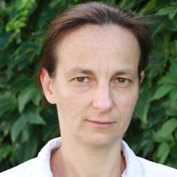
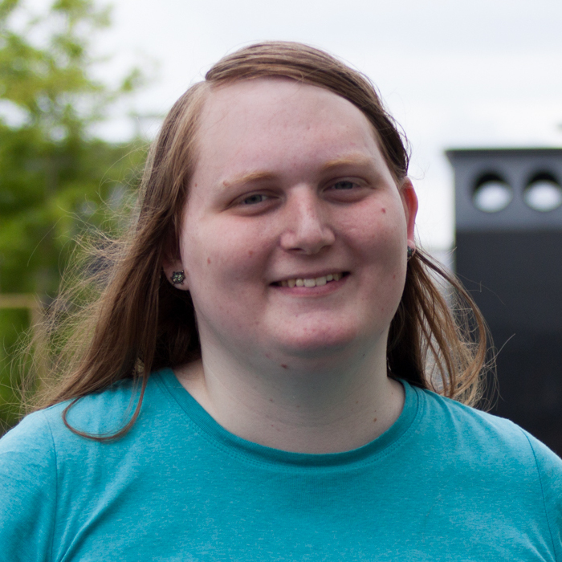

Sixth Symposium on Compositional Structures (SYCO 6)University of Leicester, UK |
The Symposium on Compositional Structures is a regular series of interdisciplinary meetings aiming to support the growing community of researchers interested in the phenomenon of compositionality, from both applied and abstract perspectives, and in particular where category theory serves as a unifying common language. We welcome submissions from researchers across computer science, mathematics, physics, philosophy, and beyond, with the aim of fostering friendly discussion, disseminating new ideas, and spreading knowledge between fields. Submission is encouraged for both mature research and work in progress, and by both established academics and junior researchers, including students.
Submission is easy, with no format requirements or page restrictions. The meeting does not have proceedings, so work can be submitted even if it has been submitted or published elsewhere. You could submit work-in-progress, or a recently completed paper, or even a PhD or Masters thesis.
While no list of topics could be exhaustive, SYCO welcomes submissions with a compositional focus related to any of the following areas, in particular from the perspective of category theory:
- logical methods in computer science, including classical and quantum programming, type theory, concurrency, natural language processing and machine learning;
- graphical calculi, including string diagrams, Petri nets and reaction networks;
- languages and frameworks, including process algebras, proof nets, type theory and game semantics;
- abstract algebra and pure category theory, including monoidal category theory, higher category theory, operads, polygraphs, and relationships to homotopy theory;
- quantum algebra, including quantum computation and representation theory;
- tools and techniques, including rewriting, formal proofs and proof assistants, and game theory;
- industrial applications, including case studies and real-world problem descriptions.
This new series aims to bring together the communities behind many previous successful events which have taken place over the last decade, including Categories, Logic and Physics, Categories, Logic and Physics (Scotland), Higher-Dimensional Rewriting and Applications, String Diagrams in Computational, Logic and Physics, Applied Category Theory, Simons Workshop on Compositionality, the Yorkshire and Midlands Category Theory Seminar and the Peripatetic Seminar in Sheaves and Logic.
This event follows SYCO 1 in Birmingham, SYCO 2 in Strathclyde, SYCO 3 in Oxford, SYCO 4 in California, and SYCO 5 in Birmingham.
Invited speakers
|  |  |
| Gabriella Böhm | Jennifer Hackett |
| Wigner Research Centre for Physics, Budapest | Department of Computer Science, University of Nottingham |
| A unified treatment of quantum symmetries | Cost and compositionality |
Best student presentation award
 |
| Maaike Zwart |
| University of Oxford |
| Composite Theories, and how to use them to prove no-go theorems for distributive laws |
PhD recruitment fair
This event will include a poster session advertising PhD opportunities in category theory and related disciplines. If you are interested in advertising PhD opportunities at your institution, please notify the local organizer Simona Paoli at sp424@leicester.ac.uk, and come along to the meeting (or send a colleague or student) with a poster advertising your PhD opportunities. We expect significant participation from Masters students and final-year undergraduates who are considering applying for study in this area.Important dates
All deadlines are 23:59 anywhere-on-earth on the given dates.
Submission deadline: Monday 4th November 2019Author notification: Monday 18th November 2019Funding applications: Monday 2nd December 2019Registration: Monday 9th December 2019Late registration still available- Symposium dates: Monday 16 and Tuesday 17 December 2019
Funding
Some funding is available for Masters students, PhD students and junior researchers to attend. To apply for this funding, please send an email to Jamie Vicary at j.o.vicary@bham.ac.uk by Monday 2 December with subject line "SYCO 6 funding application", giving a brief summary of your current status and funding required. Results of the funding application will be notified to applicants on Tuesday 3 December.Schedule
All talks are in the Bennett Link Lecture Theatre, wine reception and PhD-fair are in the Charles Wilson Belvoir Park Lounge on the second floor. You can find these locations on the map under local information.
In talks with multiple authors the speaker is indicated with a star *.
| Time | Monday 16 December | Tuesday 17 December |
|---|---|---|
| 9:30–10:00 | Jennifer Hackett, "Cost and Compositionality" (invited talk) | |
| 10:00–10:30 | ||
| 10:30–11:00 | REGISTRATION (Bennett Building) | Quanlong Wang, "An algebraic axiomatisation of ZX-calculus" |
| 11:00–11:30 | BREAK | |
| 11:30–12:00 | Gabriella Böhm, "A unified treatment of quantum symmetries" (invited talk) | Dorette Pronk* and Laura Scull, "New Results on Bicategories of Fractions Applied to Orbifolds" |
| 12:00–12:30 | Amar Hadzihasanovic, "Representable diagrammatic sets as a model of weak higher categories" | |
| 12:30–13:00 | Filippo Bonchi, Robin Piedeleu*, Pawel Sobocinski and Fabio Zanasi, "Contextual Equivalence for Signal Flow Graphs" | LUNCH |
| 13:00–13:30 | LUNCH | |
| 13:30–14:00 | ||
| 14:00–14:30 | Drew Moshier and Steve Vickers*, "Cartesian bicategories and their Karoubi envelopes" | |
| 14:30–15:00 | Morgan Rogers* and Jens Hemelaer, "Monoid Properties as Topos-Theoretic Invariants" | |
| 15:00–15:30 | Vincent Wang, "Graphical Grammar + Graphical Completion of Monoidal Categories" | BREAK |
| 15:30–16:00 | BREAK | John Stell, "Mathematical Morphology on Graphs: The role of relations on hypergraphs." |
| 16:00–16:30 | Louis Parlant, "Monoidal Monads and Preservation of Equations" | Guillaume Boisseau, "String diagrams for optics" |
| 16:30–17:00 | Maaike Zwart* and Dan Marsden, "Composite Theories, and how to use them to prove no-go theorems for distributive laws" | |
| 17:00–17:30 | Callum Reader, "Probability Monads for Enriched Categories" | |
| from 17:30 | WINE RECEPTION AND PhD FAIR (Charles Wilson Building) | |
| PUB DINNER |
Conference photo

Registration
Although registration deadline has passed, late registrations are still accepted. Please register by filling out this form.
Participants
Amongst the participants where the following 52 people.
- Alec Edgington, Cambridge Quantum Computing Ltd
- Aleks Kissinger, University of Oxford
- Alex Rice, University of Birmingham
- Alexander Cowtan, Cambridge Quantum Computing
- Amar Hadzihasanovic, IRIF, Université Paris-Diderot
- Andrew Slattery, University of Cambridge
- Andrew Smith, University of Leicester
- April Gonçalves, Roskilde University
- Arianne Meijer, Cambridge Quantum Computing
- Aron Fischer
- Brandon Hewer, University of Nottingham
- Bruno Gavranović, University of Strathclyde
- Calin Tataru, University of Birmingham
- Callum Reader, University of Sheffield
- Dan Marsden, University of Oxford
- Dorette Pronk, Dalhousie University
- Fiona Torzewska, University of Leeds
- Gabriele Lobbia, University of Leeds
- Gabriella Böhm, Wigner Research Centre for Physics
- George Kaye, University of Birmingham
- Greta Coraglia, Università degli Studi di Genova
- Guillaume Boisseau, University of Oxford
- Herve Moal, Loma Management
- Jamie McKeown, Newcastle University (former)
- Jamie Vicary, University of Birmingham
- Jennifer Hackett, University of Nottingham
- John Stell, University of Leeds
- Joseph Collins, University of Strathclyde
- Joseph Martin, University of Sheffield
- Joshua Wrigley, University of Oxford
- Jules Hedges, Max Planck Institute for Mathematics in the Sciences
- Louis Parlant, University College London
- Lachlan McPheat, UCL
- Maaike Zwart, University of Oxford
- May Proulx, University of Leicester
- Morgan Rogers, Universita degli Studi dell’Insubria
- Nicolas Blanco, University of Birmingham
- Peter Guthmann, University of Leicester
- Quanlong Wang, University of Oxford
- Robin Piedeleu, University College London
- Roy Crole, University of Leicester
- Ruben Van Belle, University of Edinburgh
- Rui Soares Barbosa, University of Edinburgh
- Simona Paoli, University of Leicester
- Stefan Zetzsche, University College London
- Steve Vickers, University of Birmingham
- Toby St Clere Smithe, University of Oxford
- Tommy McElvanney, University of Birmingham
- Vikraman Choudhury, University of Cambridge & Indiana University
- Vincent Wang, University of Oxford
- Younesse Kaddar, University of Cambridge and Ecole Normale Supérieure Paris-Saclay
- Zanzi Mihejevs, Consultant, currently at Tracsis
Local information
All talks will be held in the Bennett building, whose entrance is marked with a red star in the map below. Click here for a campus map and here for a list of restaurants nearby the university.
Sponsorship
London Mathematical Society.
Deferral
The intention is for SYCO to be a community meeting, where people have enough time to explain their ideas, and with a friendly and non-competitive atmosphere. To encourage this, in the event that more submissions are received of an acceptable standard than can be accommodated in the timetable, the programme committee may choose to defer some submissions to a future meeting, rather than reject them. This would be done based largely on submission order, giving an incentive for early submission, but would also take into account other requirements, such as ensuring a broad and inclusive scientific programme. Deferred submissions can then be re-submitted to any future SYCO meeting, where they will be prioritised for inclusion in the programme, and where they will not need to be re-reviewed. Meetings are held sufficiently frequently to avoid a backlog of deferred papers.
Submissions
Submission will be by EasyChair, via the SYCO 6 submission page
Submissions should present research results in sufficient detail to allow them to be properly considered by members of the programme committee, who will assess their interest to the SYCO community. We encourage the submission of work in progress, as well as mature results. There are no proceedings, so work can be submitted even if it has been previously published, or has been submitted for consideration elsewhere. There is no specific formatting requirement, and no page limit, although for long submissions authors should be aware that reviewers will not be able to read the entire document in detail. Think creatively—you could submit a recent paper, draft notes of a project in progress, or even a recent Masters or PhD thesis.
If you have a submission which was deferred from a previous SYCO meeting, it will not automatically be considered for SYCO 6; you still need to submit it again through EasyChair. Such a submission will be prioritised for inclusion in the SYCO 6 programme. When submitting, append the words "DEFERRED FROM SYCO X" to the title of your paper, replacing "X" with the appropriate meeting number. There is no need to attach any documents.
Programme committee
- Miriam Backens, University of Birmingham
- Nicolas Behr, Institut de Recherche en Informatique Fondamentale (IRIF)
- Carmen Maria Constantin, University of Oxford
- Chris Heunen, University of Edinburgh
- Dominic Horsman, University of Grenoble
- Aleks Kissinger, University of Oxford
- Eliana Lorch, Thiel Fellowship
- Dan Marsden, University of Oxford (PC Chair)
- Samuel Mimram, Ecole Polytechnique
- Koko Muroya, RIMS, Kyoto University & University of Birmingham
- Simona Paoli, University of Leicester
- Mehrnoosh Sadrzadeh, University College London
- Alessio Santamaria, Queen Mary University of London
- Alexandra Silva, University College London
- Pawel Sobocinski, Tallinn University of Technology
- Jamie Vicary, University of Birmingham and University of Oxford
- Philip Zahn, University of St Gallen
- Tamara von Glehn
Steering committee
The symposium is managed by the following people. If you have a general question about SYCO, or if you want to propose to host a future version, please get in touch with a member of the steering committee.- Ross Duncan, University of Strathclyde
- Chris Heunen, University of Edinburgh
- Dominic Horsman, University of Grenoble
- Aleks Kissinger, University of Oxford
- Samuel Mimram, École Polytechnique
- Simona Paoli, University of Leicester
- Mehrnoosh Sadrzadeh, Queen Mary
- Pawel Sobocinski, University of Southampton
- Jamie Vicary, University of Birmingham and University of Oxford
Local organizer
Simona Paoli, Roy Crole, Peter Guthmann, Andrew Smith